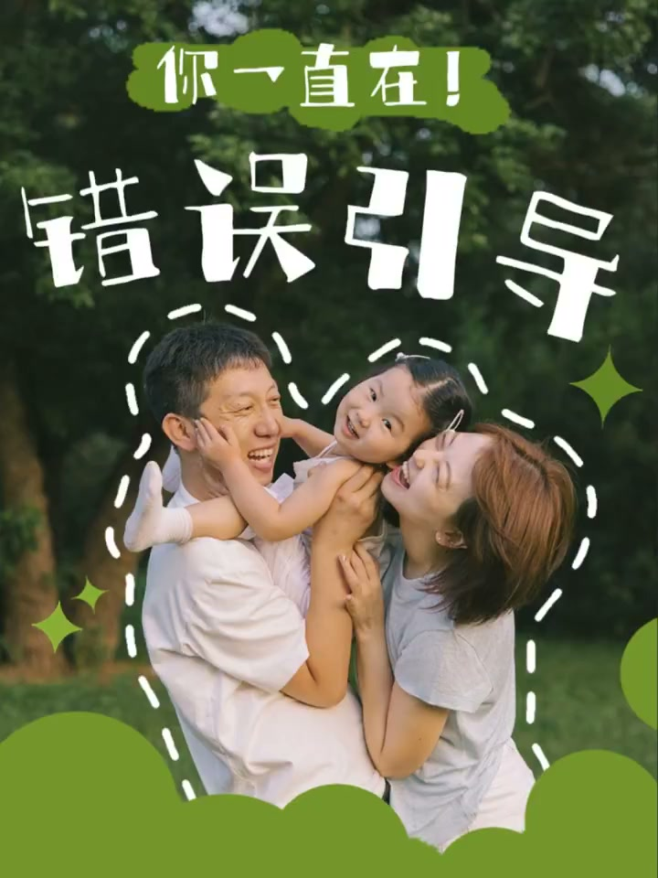
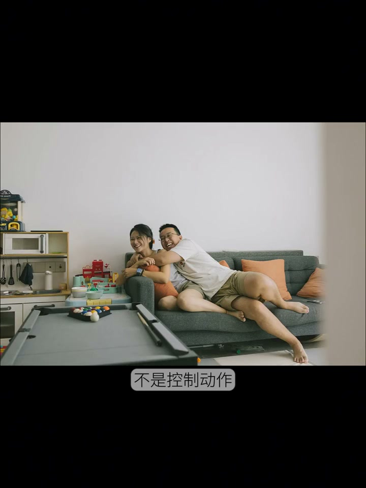
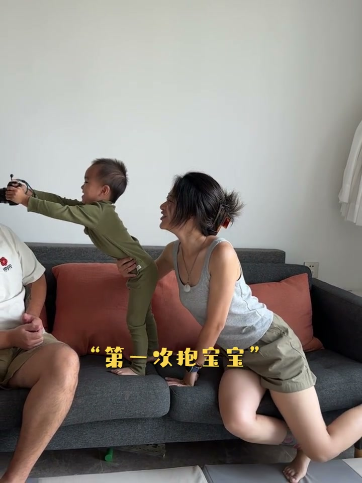
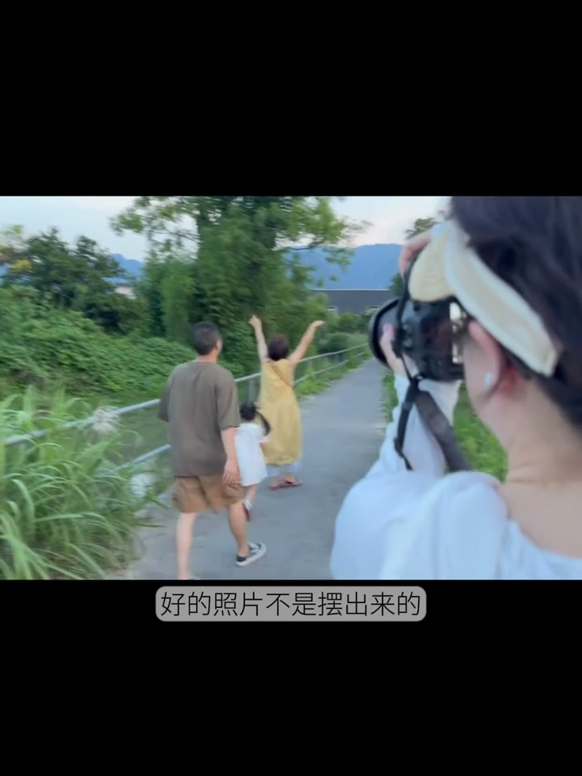
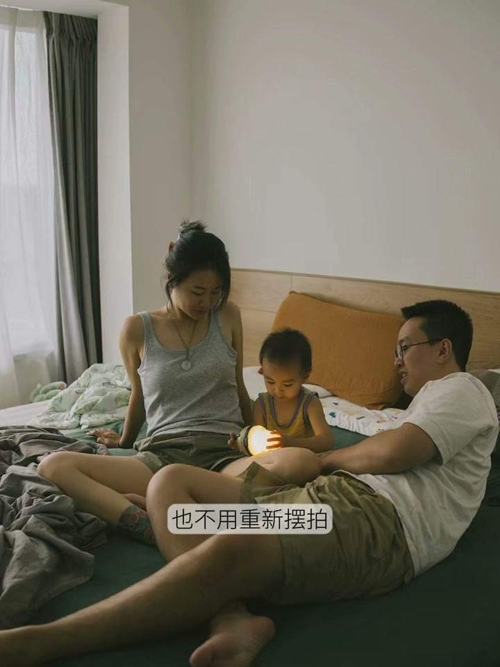
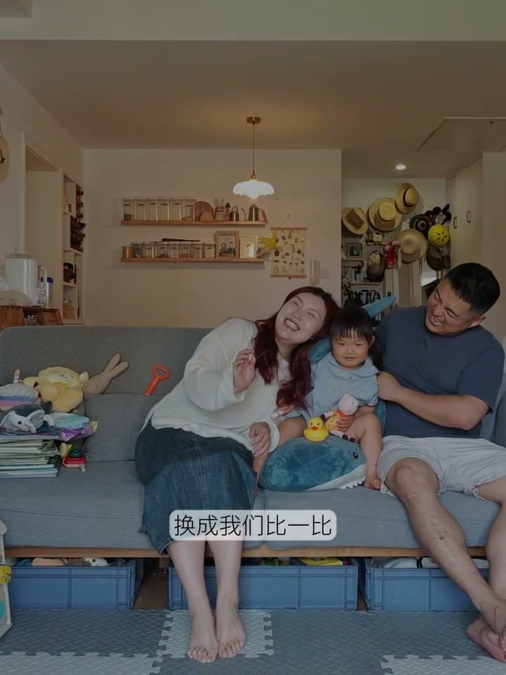
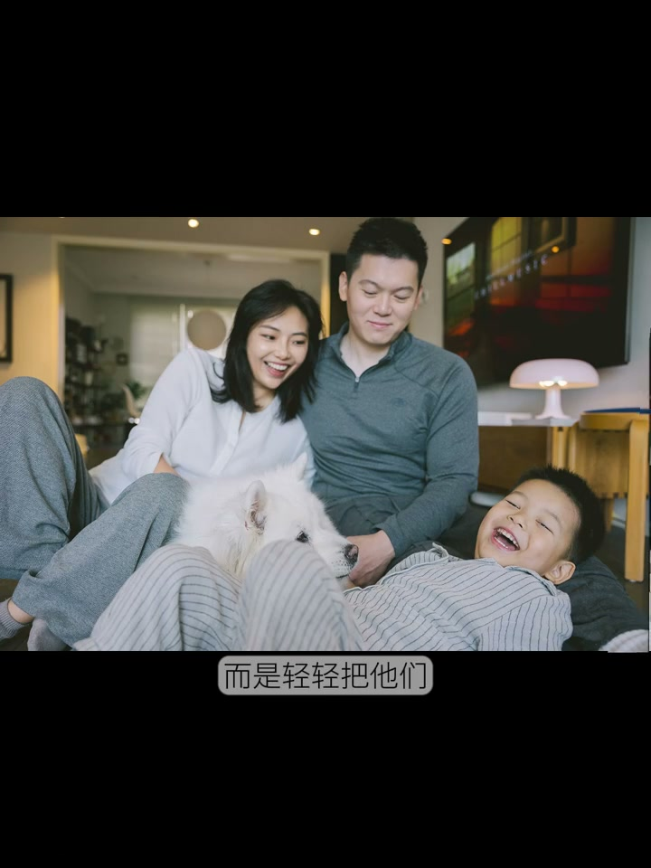

内容要点
[00:00] 你是不是总觉得
[00:01] 每次让客人摆好姿势看镜头的时候
[00:03] 他们做出来的动作都特别僵硬
[00:06] 你让他们笑一笑
[00:07] 结果换来的只是一个尴尬的假笑
[00:09] 其实不一定是你的技术不行
[00:11] 而是你的引导方式
[00:12] 缺了最关键的一环
[00:14] 这个关键的步骤
[00:15] 我把它叫做
[00:17] 很多人以为家庭计时是摆姿势按快门
[00:20] 但真正高级的引导不是控制动作
[00:23] 而是帮助他们进入一个故事场景
[00:25] 想象一下你把相机当成摄像机
[00:28] 把今天的拍摄当成他们一家人的小片场
[00:31] 而你不再只是喊看镜头的快门机器
[00:33] 你变成了一位引导家庭情绪的故事讲述者
[00:37] 故事引导法到底做了什么
[00:39] 它让你像讲故事一样带领他们进入情境
[00:42] 不是摆一个动作
[00:43] 而是体验一个瞬间
[00:45] 那么到底要怎么做呢
[00:47] 你只需要做到这三点
[00:49] 第一点
[00:49] 开拍之前先熟悉你的家庭剧本
[00:52] 引导其实从拍摄前就开始了
[00:54] 你要先了解这个家的故事
[00:56] 他们家大概什么样子
[00:58] 孩子最近喜欢什么
[01:00] 一家人惊奇有什么特别的经历
[01:02] 这些都属于他们真实情感线索
[01:05] 也就是你的拍摄剧本
[01:06] 当然这些细节你可以从调查文券中获得
[01:09] 其实也可以从他们的朋友圈中获得
[01:12] 而落实到拍摄中所谓的剧本
[01:14] 并不是让他们回忆什么第一次抱宝宝
[01:17] 也不是让他们在镜头前强行进入某种情绪
[01:20] 对普通家庭来说这反而会有点尴尬
[01:23] 孩子最近迷上的动画
[01:25] 经常重复的小游戏
[01:26] 家里一本读到烂掉的绘本
[01:29] 作者爸妈长跟孩子互动的方式
[01:32] 这些小细节比情绪回忆更自然也更真实
[01:35] 这些生活瞬间就是你拍摄时
[01:37] 最真实最自然的素材
[01:40] 第二点
[01:40] 拍摄过程中捕捉他们的高光情绪
[01:43] 好的照片不是摆出来的
[01:45] 而是被观察出来的
[01:46] 你要像盯着显示器一样
[01:48] 留意每一个情绪的微小波动
[01:50] 比如孩子突然安静的靠在妈妈肩上
[01:53] 妈妈轻轻抚摸她的头
[01:55] 那一瞬间的温柔一定是摆不出来的
[01:58] 又或者全家在沙发上聊天时
[02:00] 爸爸什么都没说
[02:01] 只是静静的看着他们笑
[02:02] 嘴角就跟着上扬
[02:04] 这些时刻不用打断
[02:05] 也不用重新摆拍
[02:07] 也不需要刻意调整
[02:08] 你只需要移动机位
[02:10] 把它记录下来
[02:11] 因为放大真实的情绪
[02:13] 永远比制造表情更有力量
[02:15] 第三点
[02:16] 少给动作指令
[02:17] 多给情经状态
[02:18] 普通家庭客户很少能演情绪
[02:21] 但他们非常擅长玩游戏
[02:23] 把套在爸爸妈妈身上
[02:24] 换成我们比一比
[02:25] 看谁能把爸爸挤成馅饼
[02:27] 把手举起来
[02:28] 换成谁是家里最可爱的人
[02:30] 赢的小朋友可以吃一颗糖
[02:32] 当你给的不是动作而是情境
[02:35] 甚至把情境换成游戏
[02:36] 他们就会自然地进入角色
[02:38] 这时候他们不再是镜头前的模特
[02:40] 而是故事里的家人
[02:42] 所以说最好的引导
[02:43] 不是把他们拉进某一种完美的姿势
[02:46] 而是轻轻把他们带回到
[02:47] 自己真实的状态里
[02:49] 让他们忘记镜头
[02:50] 也忘记应该怎么拍
[02:52] 而你所做的只是在旁边陪伴
[02:54] 与接纳着这一家人最真实的样子
[02:57] 那些突然想笑的瞬间
[02:58] 那些没忍住的鼻酸
[03:00] 还有那些拥抱的很紧的时刻
[03:02] 能把这些真实保存下来
[03:04] 成为他们未来回头
[03:06] 看时最柔软的记忆
[03:07] 是我们作为摄影师最幸福的事情了






